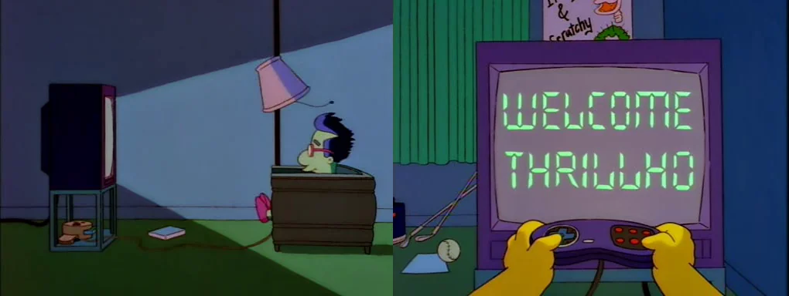

The Simpsons
A Paean to Milhouse
Springfield's eternal optimist, unshakeable sidekick, and patron saint of dry cuffs.

This is great! And all I’ve done is enter my name: Thrillhouse!
— Milhouse
Everything’s coming up Milhouse!
— Milhouse, “Mom and Pop Art” (1999)